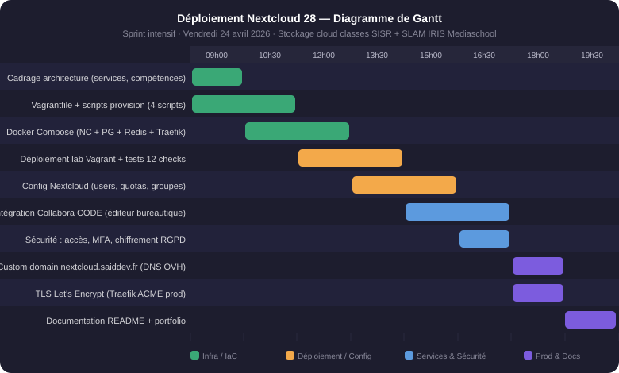

// Stockage cloud — Reverse Proxy TLS — Suite bureautique
Nextcloud 28 — Stockage cloud interne SISR + SLAM
📅 21 avril 2026 · Sprint intensif d'une journée ✅ En ligne — nextcloud.saiddev.fr
Documentation technique
Déploiement d'une instance Nextcloud 28 (stockage cloud open source) destinée aux classes BTS SIO SISR et SLAM d'IRIS Mediaschool Nice. La plateforme sert de GED mutualisée entre les deux promotions : partage de fichiers pédagogiques, dépôt de rendus TP, calendriers partagés, visioconférence Talk, et édition bureautique collaborative via Collabora CODE (Writer, Calc, Impress dans le navigateur).
Angle RGPD central : contrairement à Google Drive ou OneDrive, les données restent hébergées en France sur infrastructure maîtrisée (VPS OVH). Chiffrement côté serveur activé, contrôle d'accès granulaire par groupes (SISR / SLAM / formateurs), journalisation des accès.
🟢 Précision : ce projet est un livrable scolaire pour les classes SISR (admin sys/réseau) et SLAM (dév logiciel) d'IRIS — il n'est pas lié à mon alternance Kiné@dom (Ephycient).
Architecture déployée en 2 environnements :
• Lab local Vagrant (repo sdjbrl/nextcloud-vagrant) — VM Debian 12 avec Docker Compose orchestrant Nextcloud + PostgreSQL + Redis + Collabora CODE + Traefik. Reproductible en un vagrant up.
• Démo publique (cible) — VPS OVH avec Traefik ACME Let's Encrypt, domaine personnalisé nextcloud.saiddev.fr via CNAME OVH, même infrastructure que glpi.saiddev.fr.
Compétences BTS SIO SISR mobilisées
Stack technique
Livrables
- Repo GitHub
sdjbrl/nextcloud-vagrant(public) - Lab Vagrant Debian 12 reproductible (
vagrant up= Nextcloud + Collabora prêts) - Docker Compose complet (5 services) avec healthchecks et volumes persistants
- Script de validation automatique (12 checks)
- README avec architecture ASCII, commandes utiles, guide DNS OVH
- Démo publique HTTPS (cible) :
nextcloud.saiddev.fr
Critères d'évaluation
Retour d'expérience technique
-
Nextcloud trusted_domains en Docker
Par défaut Nextcloud bloque tout accès depuis une IP non déclarée. Dans Docker Compose, passer
NEXTCLOUD_TRUSTED_DOMAINSavec l'IP de la VM + le domaine prodnextcloud.saiddev.fr+localhost. Sans ça : page blanche avecAccess through untrusted domain. -
Collabora : SSL désactivé en local
Collabora CODE est conçu pour HTTPS. En local (HTTP), il faut passer
--o:ssl.enable=false --o:ssl.termination=truedansextra_params. Traefik gère la terminaison TLS en prod, Collabora ne voit que du HTTP côté conteneur. -
Ordre de démarrage Docker Compose
Nextcloud doit attendre que PostgreSQL et Redis soient healthy (pas seulement démarrés). Utiliser
depends_on: condition: service_healthycombiné à des healthchecks déclarés — sinon Nextcloud échoue son init BDD au premier boot. -
OVERWRITEPROTOCOL : HTTP en local, HTTPS en prod
La variable
OVERWRITEPROTOCOLcontrôle le protocole dans les URL internes Nextcloud. Mettrehttpen Vagrant local,httpsuniquement sur le VPS avec TLS. Sinon les redirections internes cassent le login. -
Custom domain OVH → VPS
Ajouter un
CNAME nextcloud → <ip-vps>dans la zone DNS OVH + configurer Traefik avec--certificatesresolvers.letsencrypt.acme.httpchallenge=true. Cert Let's Encrypt généré automatiquement (5-10 min). Même procédure queglpi.saiddev.fr.
Gestion des risques
| Risque identifié | Probabilité | Impact | Mesure de mitigation |
|---|---|---|---|
| Perte des données utilisateurs (volume nc_data) | Moyenne | Élevé | Backup nightly du volume Docker + dump PostgreSQL — rotation 7 jours sur VPS OVH |
| Collabora CODE image non maintenue / incompatibilité | Moyenne | Moyen | Pinning de version dans docker-compose.yml, ou fallback OnlyOffice (alternative supportée) |
| Accès non autorisé (comptes par défaut) | Élevée | Élevé | Mot de passe admin non-default dès le provisioning, MFA activé, groupes SISR/SLAM séparés |
| Free tier VPS saturé / coût inattendu | Faible | Moyen | VPS OVH Starter 2 vCPU / 2 Go RAM suffisant. Facturation fixe prévisible (~5€/mois) |
PRA / PCA
vagrant destroy -f && vagrant up repart de zéroAnnexes
